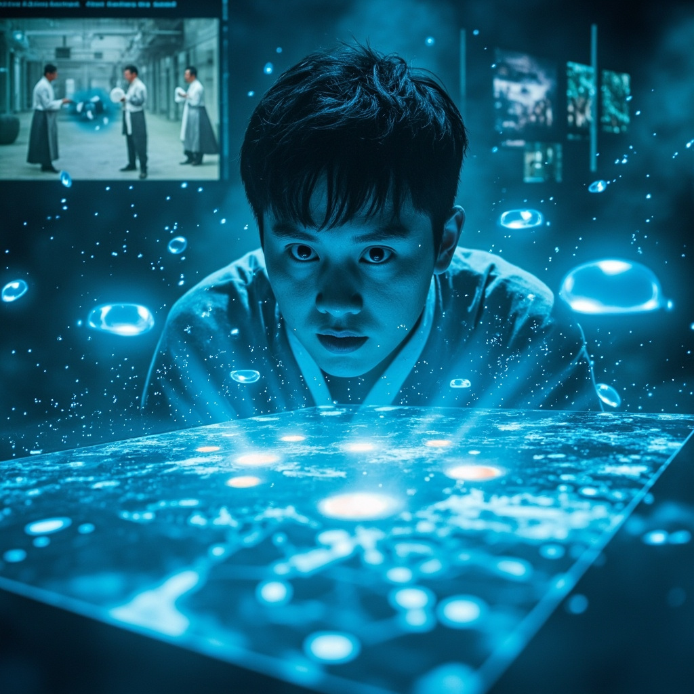
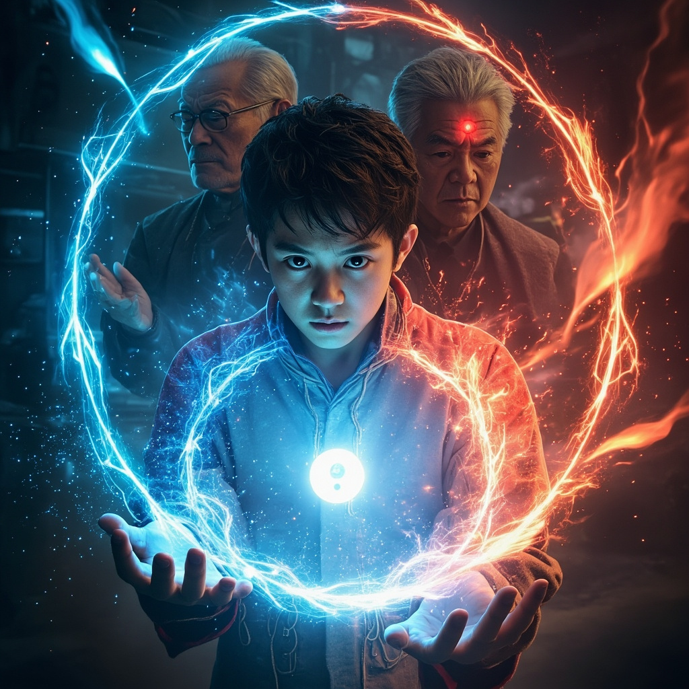
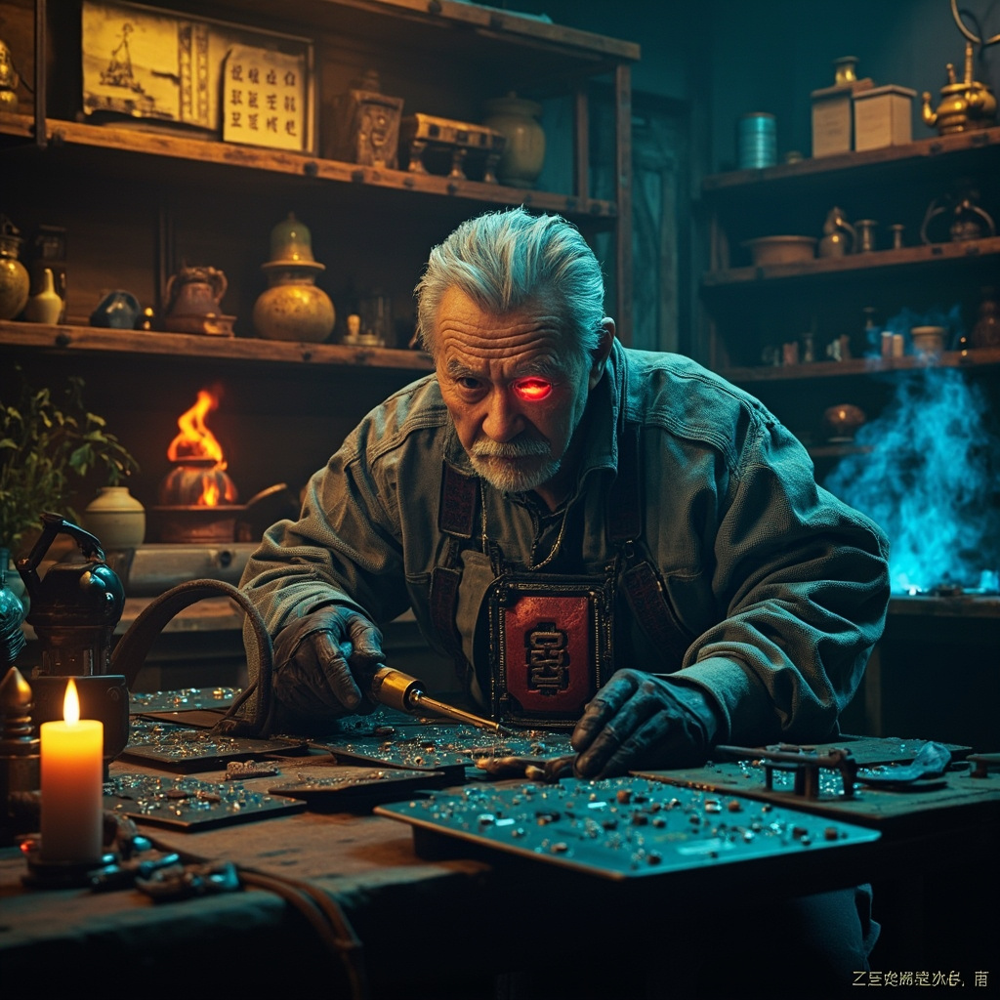
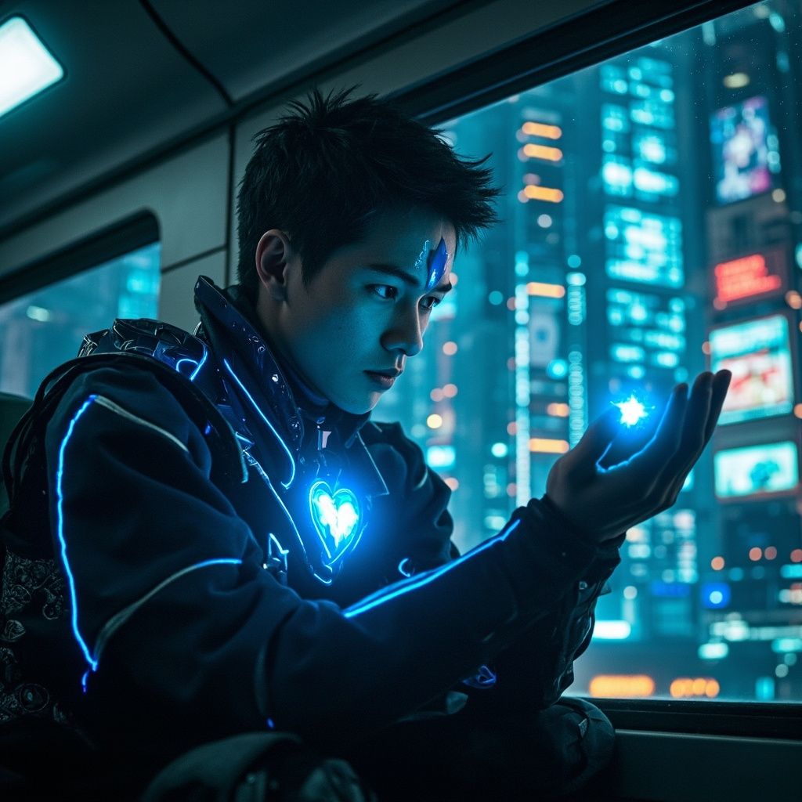

🎧 點擊播放有聲朗讀
懸浮列車在霓虹閃爍的摩天大樓間穿梭，林塵靠著窗戶，看著掌心那枚泛著幽藍光芒的靈芯。它正在以一種前所未有的頻率震動，彷彿在與什麼東西產生共鳴。系統提示：檢測到同頻靈能波動，距離三公里，方位東南。林塵眉頭微皺——這已經是第七次感應到同類波動，但這次強度是之前的十倍。

林塵穿過第七區散發著機油和檀香混合氣味的巷子，在一間掛著「靈械工坊」招牌的店鋪前停下。店門是古老的木質結構，卻鑲嵌著虹膜識別鎖。店內左側擺滿丹爐、符紙、靈草的木架，右側則是陳列著神經接口、量子芯片、能量核心的金屬工作台。一個穿著灰色工裝的老人——墨衡——正在焊接電路板，他的左眼是正常的渾濁瞳孔，右眼卻閃爍著機械的紅光。

墨衡胸前的靈芯突然射出一道紅光，與林塵懷中迸發的藍光在空中交匯，形成一個雙色太極圖案懸浮在兩人中間。林塵感到體內的靈力與靈芯的科技能量開始瘋狂流轉，一種前所未有的通明感貫穿全身。他「看見」了——整個工坊的靈氣流動、電路中的電子軌跡、甚至空氣中微弱的無線電波，全部以清晰的線條和色彩呈現在意識中。這就是共鳴狀態：兩枚同源靈芯在近距離激活時，會暫時融合雙方的感知與計算能力。

在共鳴狀態中，海量信息湧入林塵的腦海：他看見三百年前的實驗室，穿著白大褂和道袍的人們圍繞著發光的靈芯原型；他看見追殺與逃亡，靈芯被緊急封存藏匿於世界各地；他看見了最近三個月中，至少有五枚靈芯被不同勢力重新激活的記錄；最後，他看見一幅地圖，標記著另外十個光點的位置，其中三個正在向這座城市移動。當十二枚靈芯全部被激活並聚集時，會發生「終極共鳴」。

窗外突然傳來刺耳的警笛聲，數輛修真管理局的懸浮車降落在巷口。墨衡迅速從工作台下抽出一個金屬箱扔給林塵，裡面有他對靈芯的研究資料和輔助模組。「從後門走，去3號位置的安全屋！」墨衡啟動了工坊的防禦陣法，牆壁上的符文逐漸亮起。林塵握緊金屬箱，衝進黑暗的地下通道。最後聽見的是墨衡平靜的話語：「記住，靈芯的真正力量不在於它能做什麼，而在於它能讓你成為什麼。」